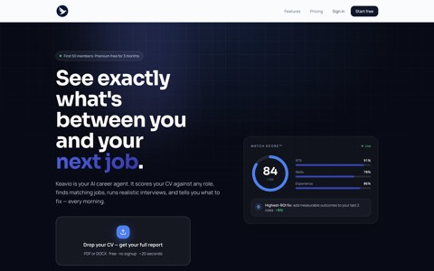
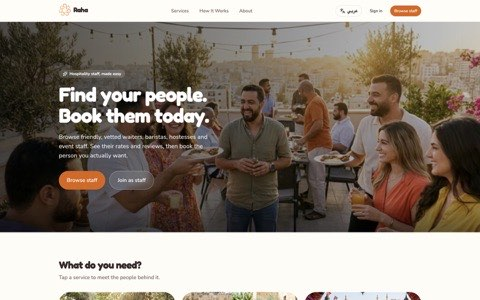
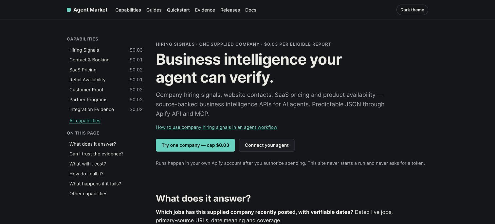
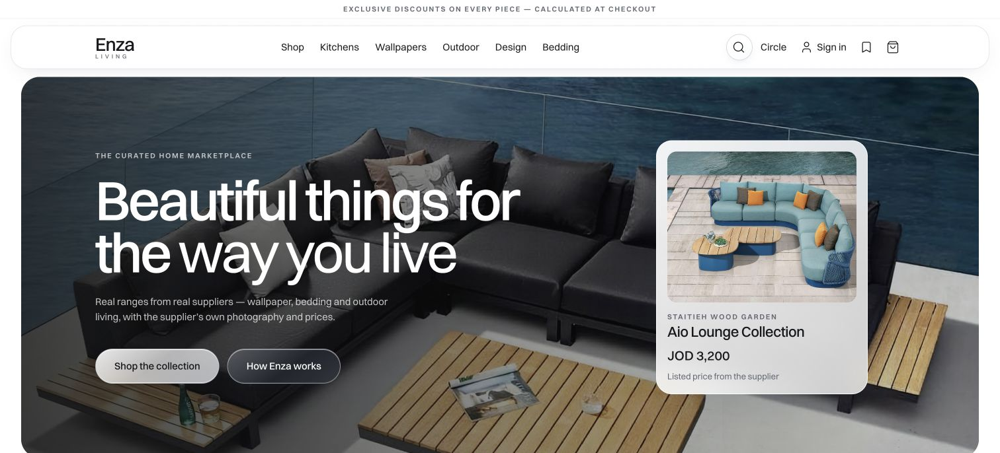
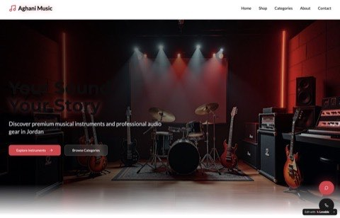
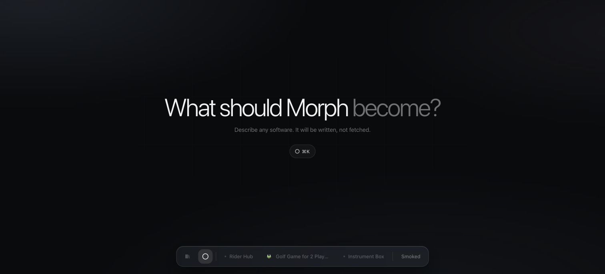
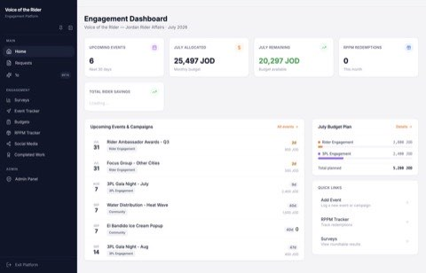
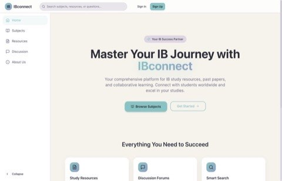
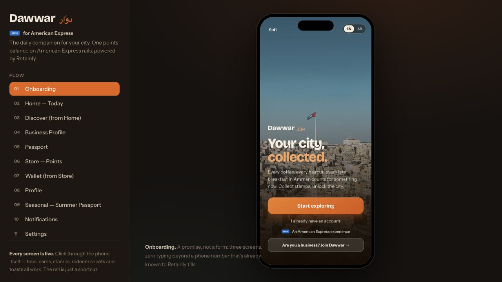

Customer retention software that helps repeat-customer businesses see who is returning, who is drifting, and what deserves attention.
Business tools ↗
Business tools, AI workflows and marketplaces. Explore the products, understand the problem, and see where each one stands.
Customer retention software that helps repeat-customer businesses see who is returning, who is drifting, and what deserves attention.

An AI career platform that turns a CV into a structured profile and matches experience to relevant opportunities.

A bilingual marketplace for booking vetted hospitality staff, with Arabic and English experiences for venues and workers.

Business intelligence APIs covering company hiring, website contacts, SaaS pricing and product availability, with source-backed results.

A team workspace connecting selected conversations, projects, evidence and manager reviews.

A curated home marketplace with product discovery and checkout in Jordanian dinars.

A boat marketplace built around fleet discovery, availability, booking and owner-side management.

Music retail and inventory work spanning a catalogue of instruments and pro-audio equipment.

A clinic workspace connecting patient records, appointments, retention intelligence and an interactive 3D dental chart.

A corporate website presenting Al-Rayyan Gate’s logistics services and giving prospective clients a direct route to enquire.

A software workspace exploring a more adaptable digital experience.

A sentiment-tracking tool for understanding rider feedback and satisfaction.

A focus-group survey tool built for rider research.

A business automation concept for handling customer conversations across calls, messages and website visits.

A study platform for IB resources, past papers and collaborative learning.

A quiz product from the portfolio, exploring engagement through play.

A rider engagement platform I designed and built for a regional delivery business, bringing partner benefits, rewards, missions and community into one experience.

A healthcare project from the product portfolio, available to explore in a private walkthrough.

An interactive city-discovery and loyalty companion prototype for Amman, powered by Retainly.
Try a different name or explore the whole collection.
The collection includes public products, private client work and earlier explorations. Each project shows its current availability; private work is available to discuss.
A product idea, a growth challenge, or a partnership. Let’s find the useful next step.